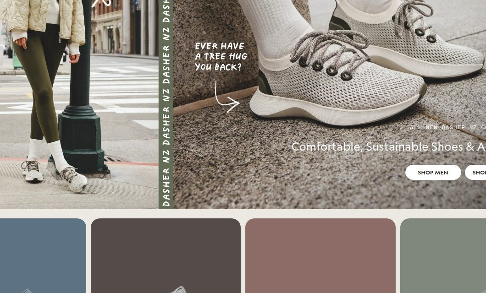

2
High
Homepage
Vague hero copy
The hero headline 'Wildly Comfortable. Super Natural.' is abstract and doesn't directly address the visitor's intent to find comfortable, sustainable shoes, causing them to rely on secondary copy or navigation to understand the value proposition.

⚠ Vague hero copyThe hero headline 'Wildly Comfortable. Super Natural.' is a brand slogan that doesn't communicate what the product is …

Both are photographs of the live page — the right side has the
change applied in the browser.
Evidence
Observed on the live site
✓ Flagged independently by 1 of 7 analysts
- H1: 'Wildly Comfortable. Super Natural.' CTAs: 'SHOP MEN', 'SHOP WOMEN'. Body sample includes 'Wear All Day Comfort' and 'Materials From The Earth' sections below the fold.
Business case
If this change wins
$35,381 – $176,904
annual opportunity if it wins
Low
Effort — 0.5-2 days
not testable at current traffic
A/B test duration
Prioritisation
PXL score: 5 / 10
| Question | Answer | Points |
|---|---|---|
| Is the change above the fold? | Yes | 1 |
| Is the change noticeable in under 5 seconds? | Yes | 2 |
| Does it add or remove an element? | Yes | 1 |
| Does it run on a high-traffic page? | Yes | 1 |
| Discovered via user testing? | No | 0 |
| Discovered via qualitative feedback (survey, support)? | No | 0 |
| Supported by heatmaps or session recordings? | No | 0 |
| Found via digital analytics or real-user field data? | No | 0 |
| Verified by direct technical measurement? | No | 0 |
Implementation
Hand this to your developer
- Surface
- Homepage — HOMEPAGE HERO
- Problem
- The hero headline 'Wildly Comfortable. Super Natural.' is abstract and doesn't directly address the visitor's intent to find comfortable, sustainable shoes, causing them to rely on secondary copy or navigation to understand the value proposition.
- Current state
- h1: Wildly Comfortable. Super Natural.; cta: SHOP MEN / SHOP WOMEN; notes: The headline is a brand slogan, not a value proposition. It doesn't mention shoes, comfort, or sustainability explicitly. Visitors must read secondary copy or navigate to understand what Allbirds offers.
- Change
- h1: Comfortable Shoes, Made from Natural Materials; cta: Shop Men's Shoes / Shop Women's Shoes; notes: Directly state the product and key benefits. Use CTAs that specify the product category to reduce ambiguity and guide visitors to the right collection.
- Acceptance criteria
- GIVEN a first-time visitor on the affected page
WHEN the change is live
THEN Directly state the product and key benefits. Use CTAs that specify the product category to reduce ambiguity and guide visitors to the right collection, with no regression at 375px and 1280px widths. - Tracking
- event: cro_vague_hero_copy on interaction with the changed element; verify it fires in BOTH variants before opening traffic.
- Success metric
- conversion rate on the affected step
- QA checklist
- Chrome / Safari / Firefox · 375px + 1280px · keyboard reachable · screen-reader name present · no CLS introduced
- Effort
- Low — 0.5-2 days
- Test plan
- 299,882 visitors per variant (95% significance, 80% power); not testable at current traffic.
- Rollback
- Feature-flag the change; revert the flag if the primary metric drops for 3 consecutive days.